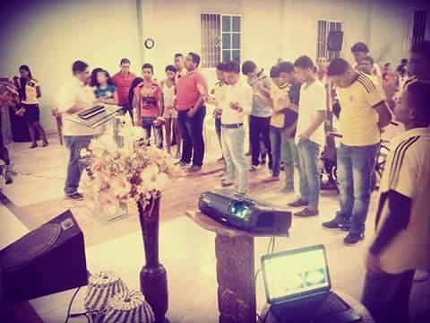
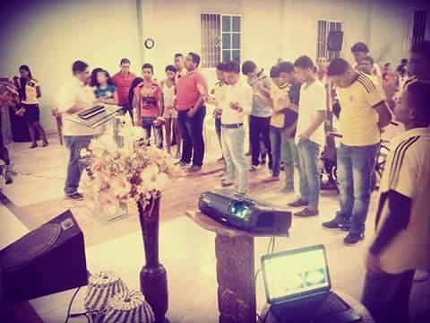
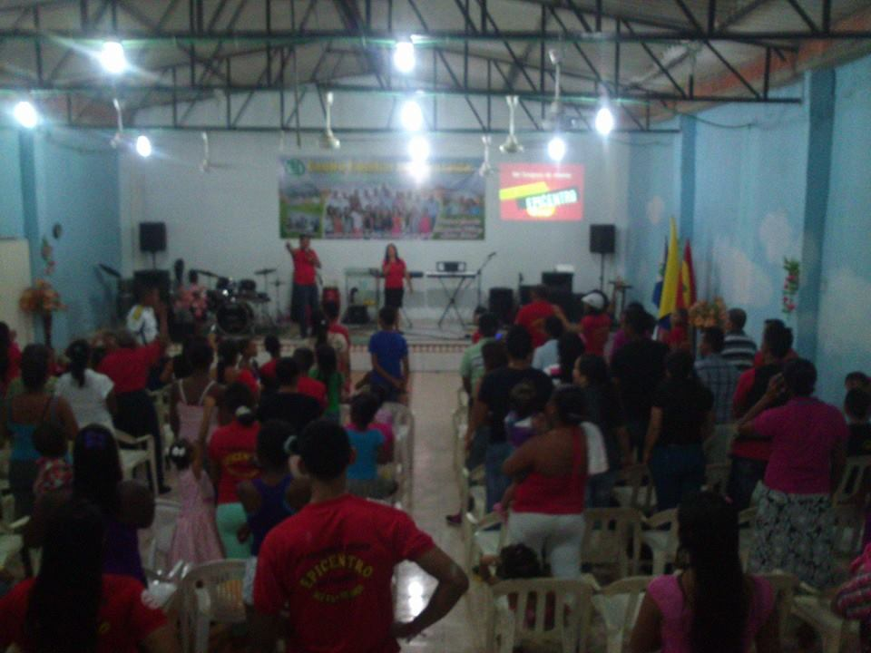

Reuniones Semanales

Cada sábado, todos los integrantes de Saetas de Dios tienen una
cita para celebrar servicio especial organizado por jóvenes
para Dios.
Más información...

Cada sábado, todos los integrantes de Saetas de Dios tienen una
cita para celebrar servicio especial organizado por jóvenes
para Dios.
Más información...

Anualmente, tiene lugar el congreso juvenil. Organizado por saetas de Dios, donde
se congregan todos los jóvenes del sector para presentar a Cristo
como la única solución viable para la problemática de la sociedad.
Más información...
El Ministerio Juvenil organiza otras actividades con diferentes fines, en los que se encuentran:
Integración de jóvenes donde se hacen distintas dinámicas.
Se organizan diferentes actividades para generar fondos para el sostenimiento del mismo.
Anualmente se lleva a cabo el campamento del Centro Familiar Cristiano La Esmeralda, donde los Saetas de Dios tenemos una participación importante.
Los saetas de Dios se toman las calles del suroccidente de Barranquilla para predicar a Cristo a los jóvenes del sector con diferentes actividades. Se realizan dramas, musidramas, y predicas en las calles.